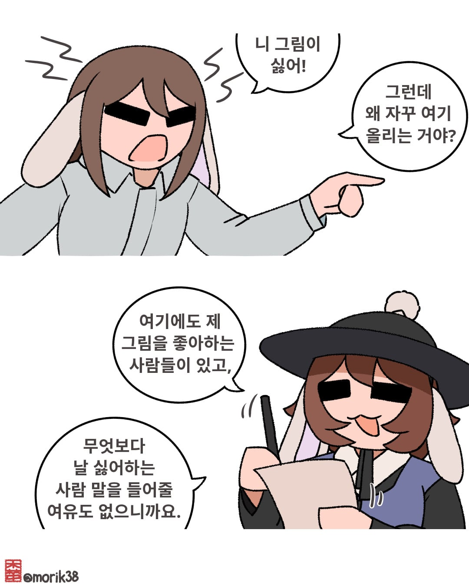
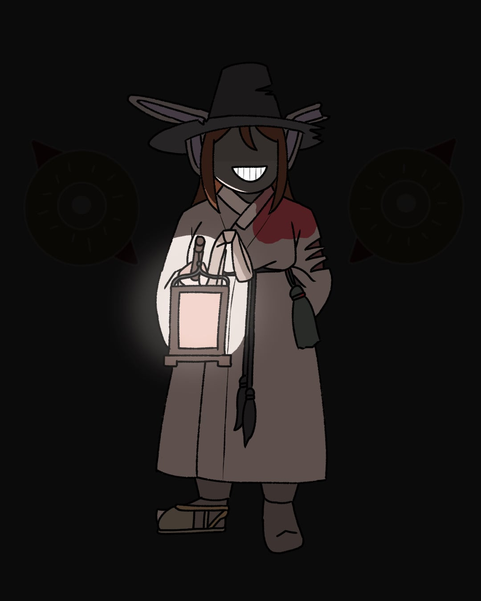
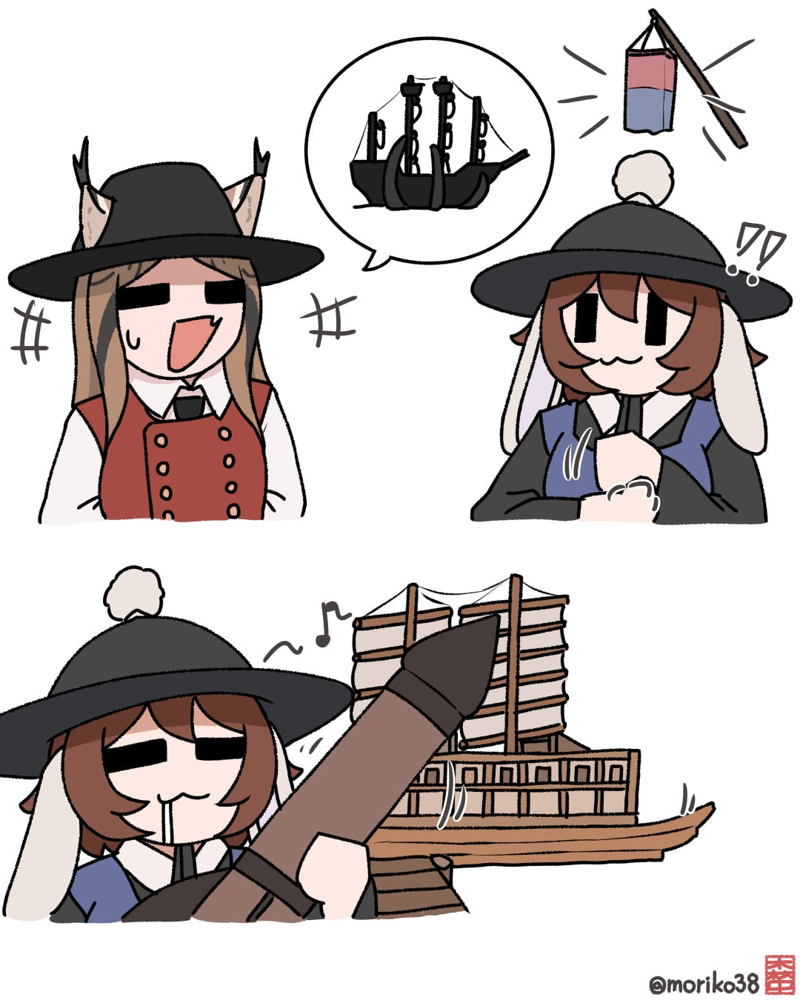
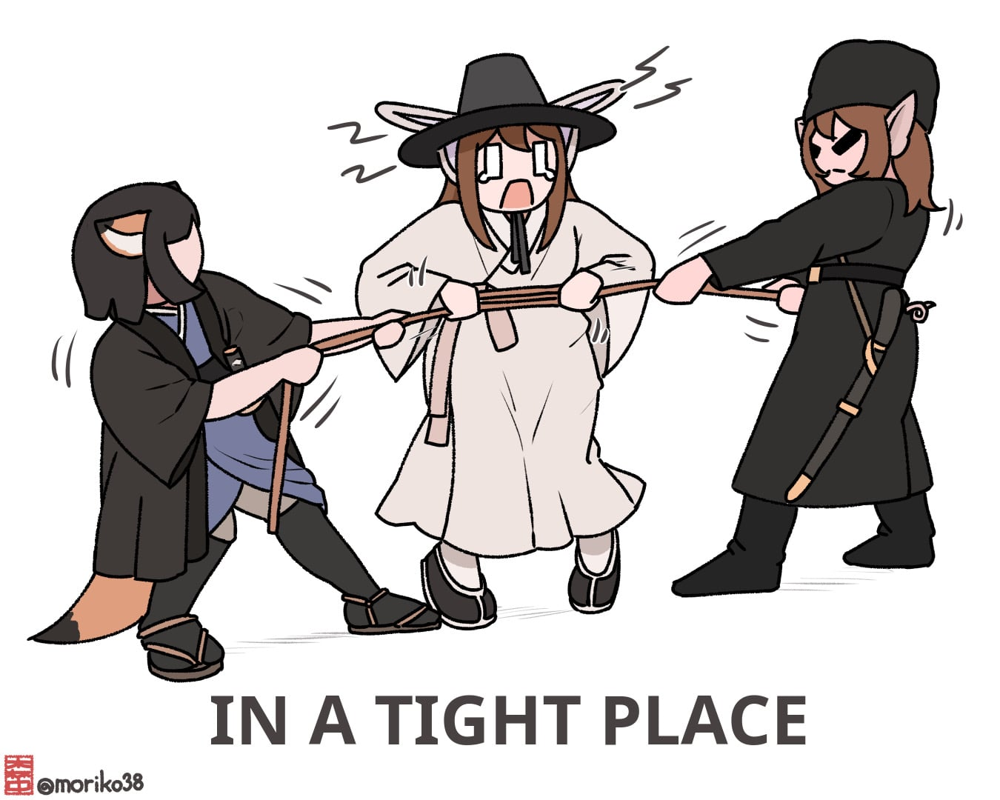

151 · 9 · 10 시간 전 · 원문




하나만 올리기 애매한것들 뭉텅이
수집 당시 댓글 9개
DosKeryos · 6 시간 전
마인드 칭찬해
파카사탕 · 5 시간 전
뭉탱이
발정난고양이의하악하악하악질 · 5 시간 전
스프링클 · 4 시간 전
와! 창귀!!
Young男 · 2 시간 전
토끼조선 너어어어어무죠하아아아!!!!!!
김페파 · 1 시간 전
난 좋아 많이 올려
보추암컷타락 · 1 시간 전
이작가 주리를 틀면 더 많이 만든다고 한다.
챠메 · 55 분 전
난 재밌어
이별 · 29 분 전
뭔가 원사삘인데 싶어서 계급장보니까역시나ㅋㅋㅋㅋㅋㅋㅋ

마인드 칭찬해